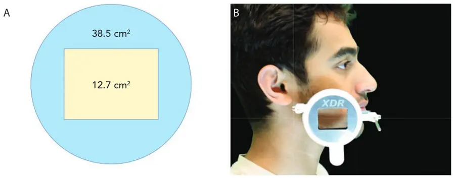

پرواز پنجساعته در ۱۲ کیلومتر: ۲۰ تا ۵۰ µSv، میانگین دوز پزشکی آمریکا از ۳٫۱ به ۲٫۲ mSv کاهش یافته.
دوز مؤثر سن، جنس و حساسیت فردی را در نظر نمیگیرد؛ برای مقایسه است نه برای یک فرد.
سطوح ACR: بزرگسال کمتر از ۱۰۰ µSv / ۱۰۰µSv–۱mSv / ۱–۱۰ / ۱۰–۳۰ / ۳۰–۱۰۰ mSv؛ کودک هر سطح ~سه برابر پایینتر.
بلوک ۲ — گفتوگو با بیمار
سه شرط دوز: بهینه، زیر آستانهی واکنش بافتی، کمینه برای خطر تصادفی.
پنج گام: قطع نکن و کوچک نشمار، بگو چرا برای همین بیمار، فقط پرتوگیری لازم نه پروتکل ثابت، اقدامات کاهش دوز را نام ببر، دوز را به روز/ماه/سال زمینه ترجمه کن.
سابقهی پیشین را از دندانپزشک قبلی بگیر تا بیدلیل دوباره پرتوگیر نکنی.
بلوک ۳ — پایان محافظها
محافظ گناد: از دههی ۱۹۵۰ برای اثرات وراثتی، امروز هیچ شواهدی از اثر وراثتی در انسان نیست ← هیچ منطقی برای محافظت گناد نیست، ولی تا اصلاح مقررات محلی، از مقررات پیروی کن.
کالر تیروئید: خطر تیروئید واقعی و تأییدشده است، بهویژه در کودکان، ولی تیروئید از پرتو اولیه و پراکندگی داخلی پرتوگیر میشود و محافظ در برابر پراکندگی داخلی کاری نمیکند، کولیماسیون مستطیلی دوز تیروئید از پرتو اولیه را ۵۰٪ کم میکند، و محافظ آرتیفکت میسازد و تکرار میآورد.
بیمار باردار: آستانهی واکنش بافتی ۱۰۰ mGy، دوز جنینی دندانی شامل CBCT ۰٫۰۱ mGy = ۱۰٬۰۰۰ برابر کمتر، سرطان درونرحمی زیر ۱۰ mGy مشاهده نمیشود، خطر ~۱ در ۱٫۷ میلیون، پیشبند لازم نیست، تأیید بارداری لازم نیست، ولی همهی اصول دیگر باید سختگیرانه رعایت شوند.
کارکن باردار: پایش الزامی اگر دوز جنینی احتمالاً از ۱ mSv در کل بارداری فراتر رود، حد ۰٫۵ mSv/ماه (NCRP) یا ۱ mSv به جنین پس از اعلام (ICRP).
بلوک ۴ — سه اصل و کاهش دوز
توجیه، بهینهسازی (ALARA)، محدودسازی دوز — و محدودسازی بر بیمار اعمال نمیشود؛ بیمار حد دوز ندارد.
مؤثرترین اقدام: کاهش معاینات غیرضروری، معیارهای انتخاب اصل توجیه را برآورده میکنند.
فیلم E/F دو برابر سریعتر از D ← نصف دوز، D باید حذف شود، صفحهی خاکی کمیاب (گادولینیوم و لانتانیوم) دوز پانورامیک و سفالومتریک را ۵۰٪ کم میکند، ولی سود دیجیتال در خارجدهانی کمینه است.
فاصلهی منبع تا پوست ۴۰ بهجای ۲۰ سانتیمتر ← ۱۰ تا ۲۵٪ کاهش، حداقل قانونی ۲۰ سانتیمتر، سه استاندارد ۲۰/۳۰/۴۰.
کولیماسیون مستطیلی: تا پنج برابر کاهش دوز، ۶۰٪ کاهش سطح پوست، ۳۸٫۵ در برابر ۱۲٫۷ سانتیمتر مربع (۶۶٪ کمتر)، حد میدان گرد ۷ سانتیمتر، سه برابر مساحت گیرندهی شماره ۲ (۳٫۲×۴٫۱).
فیلتراسیون: ۳ میلیمتر آلومینیوم ← پرتوگیری سطحی به ۲۰٪، الزام ۱٫۵ mm Al برای ۵۰–۷۰ kVp و ۲٫۵ mm برای بالاتر.
kVp پایینتر = دوز بیشتر، کنتراست بیشتر، محدودهی کاری ۶۰ تا ۷۰، حداقل ۶۰ و حداکثر ۸۰، پتانسیل ثابت ۲۵٪ کمتر.
زمان پرتوگیری حیاتیترین عامل، mA روی بالاترین، ۳۰٪ تکرارهای فیلمی از تغییرپذیری پردازشگر، پردازش زمان-دما نه با نگاه.
بلوک ۵ — حفاظت کارکنان
مانع بهترین است، کلید پرتوگیری پشت مانع، با پنجرهی سربی و تماس دیداری و کلامی.
قاعدهی موقعیت و فاصله: ۶ فوت (۲ متر) و زاویهی ۹۰ تا ۱۳۵ درجه، دو دلیل: قانون عکس مجذور و جذب پراکندگی توسط سر بیمار.
سه منبع پرتوگیری اپراتور: نشتی هد، پراکنده از بیمار، فوتونهای اولیهی عبوری.
اپراتور هرگز گیرنده را نگه ندارد؛ در صورت لزوم والد یا همراه، هرگز کارکنان مطب، محفظهی لوله را نگه ندار مگر دستگاه دستی.
دیوار: پرتوگیری غیرشغلی کمتر از ۰٫۰۲ mGy/هفته (۱ mGy/سال)، گچبرد، آجر یا بتن معمولاً کافی است.
دستگاه دستی: افقی، عمود بر اپراتور، سپر نزدیک بیمار و موازی اپراتور، زاویه دادن یا عقب کشیدن سپر ناحیهی محافظ را از بین میبرد.
دوزسنج: توصیه اگر دوز سالانه احتمالاً بیش از ۱ mSv، الزام فدرال اگر بیش از ۱۰٪ حد سالانه، روی سینه، OSLD (Al₂O₃:C، ماهانه) و ذخیرهسازی یون مستقیم (USB، قرائت فوری)، هر دو حساس تا ۱۰ µSv.
بلوک ۶ — حدود دوز و منابع
شغلی: NCRP ۵۰ mSv/سال و تجمعی ۱۰ mSv × سن، ICRP ۲۰ mSv میانگین پنجساله، پوست/دست/پا ۵۰۰ mSv در هر دو.
عمومی: ۱ mSv (NCRP: ۵ mSv برای نامکرر)، عدسی ۱۵، پوست ۵۰ mSv.
حدود شامل پرتو زمینه و پرتو تشخیصی/درمانی نمیشوند، بیمار حد دوز ندارد، منشی و کارکنان غیررادیوگرافی تابع حدود عموم.
میانگین دوز شغلی دندانپزشکی ۰٫۲ mSv = ۱٪ حد مجاز، حدود از دههی ۱۹۳۰ چند بار پایین آمدهاند.
زمینه: جهانی ۲٫۴ (دامنه ۱ تا ۱۳)، آمریکا ۳٫۱، جمع کل آمریکا ۵٫۴ mSv.
رادون ۵۲–۷۴٪ (از اورانیوم-۲۳۸؛ دومین علت سرطان ریه، ۳ تا ۱۴٪)، کیهانی ۱۱–۱۶٪ (با هر ۲۰۰۰ متر دو برابر؛ سطح دریا ۰٫۳۳، دنور ۰٫۵۰)، داخلی ۹–۱۲٪ (عمدتاً پتاسیم-۴۰)، زمینی ۷–۲۰٪ (۲۰ سانتیمتر بالایی خاک).
CT ۵۶–۶۱٪ دوز تصویربرداری و شمارش CT از ۲۰۰۶ تا ۲۰۱۶ دو برابر شد، فراوردههای مصرفی ۲–۶٪، به ترتیب سیگار، مواد ساختمانی، سفر هوایی، معدن و کشاورزی، سوخت فسیلی.
LNT: خطی حتی در دوز بسیار پایین، بدون دوز ایمن، استدلال: سرطان کلونال از یک سلول، یک واقعیت اثباتشده نیست، هورمسیس و پاسخ سازشی میگویند خطر کمتر؛ اثر تماشاگر و پاسخ فراخطی میگویند خطر بیشتر، و در نبود دادهی قطعی، برآورد محافظهکارانهی LNT مبنای سیاست است.
سؤالهای این مرور سختترند و بسیاری یک عدد، یک موقعیت مطب، یا یک پرسش بیمار میدهند و میپرسند کدام اقدام، کدام حد، یا کدام پاسخ.

کولیماسیون مستطیلی و کاهش سطح پرتوگرفته (White & Pharoah. Oral Radiology, 9th ed. — Fig. 3.6)
قدم 2 · question
بیمار میپرسد این فولماوت چقدر پرتو دارد. بهترین شیوهی پاسخ چیست؟
۰۱
بگو مقدارش صفر است تا بیمار نگران نشود
۰۲
بگو چهل میکروسیورت است و توضیح بیشتری نده، چون این دقیقترین بیان است و هر مقایسهای با پرتو زمینه یا پرواز، خطر را کوچکتر یا بزرگتر از واقع جلوه میدهد و اعتماد بیمار را کم میکند
۰۳
بزرگی نسبی دوز را بر حسب معادل روزهای پرتو زمینه بیان کن — حدود پنج روز — و با منابع آشنا مانند یک پرواز هوایی مقایسه کن؛ چون اعداد میکروسیورت بهآسانی برای بیماران قابل فهم نیستند
۰۴
دوز را با حد دوز شغلی سالانه مقایسه کن، چون بیمار هم تابع همان حد است
قدم 3 · question
دستیار مطب اعلام میکند باردار است. چه تغییری در برنامهی ایمنی لازم است؟
۰۱
هیچ تغییری لازم نیست، چون دستیار هم مانند بیمار باردار حد دوز ندارد و تأیید بارداری برای او هم لازم نیست؛ دوز شغلی دندانپزشکی بهطور میانگین یک درصد حد مجاز است و حتی در ماههای آخر به جنین نمیرسد
۰۲
دوزسنج شخصی باید فراهم شود و پرتوگیری شغلی پس از اعلام بارداری به ۰٫۵ میلیسیورت در ماه محدود گردد؛ و پایش الزامی است اگر دوز به رویان و جنین احتمالاً از ۱ میلیسیورت در کل بارداری فراتر رود
۰۳
دستیار باید تا پایان بارداری کاملاً از مطب، حتی از کار پشت مانع، کنار گذاشته شود، چون هیچ سطحی از پرتوگیری شغلی در بارداری پذیرفتنی نیست و پایش دوز جایگزین قابل قبولی برای دور کردن کامل از محیط کار نیست
۰۴
حد دوزش به ۵۰ میلیسیورت در ماه افزایش مییابد چون دو نفر است
قدم 4 · question
میانگین پرتو زمینه و جمع کل پرتوگیری سالانه چقدر است؟
۰۱
زمینهی جهانی ۲۴ میلیسیورت با دامنهی ۱۰ تا ۱۳۰ در نقاط مختلف، زمینهی آمریکا ۳۱، جمع پزشکی آمریکا ۲۲، و جمع کل آمریکا ۵۴ میلیسیورت در سال
۰۲
زمینهی جهانی ۲٫۴ میلیسیورت با دامنهی ۱ تا ۱۳، زمینهی آمریکا ۳٫۱، جمع پزشکی آمریکا ۲٫۲، و جمع کل آمریکا ۵٫۴ میلیسیورت در سال
۰۳
زمینهی جهانی ۰٫۲۴ با دامنهی ۰٫۱ تا ۱٫۳ در نقاط مختلف، زمینهی آمریکا ۰٫۳۱، جمع پزشکی آمریکا ۰٫۲۲، و جمع کل آمریکا ۰٫۵۴ میلیسیورت در سال
۰۴
پرتو زمینه در همهی جهان دقیقاً یکسان و برابر ۱ میلیسیورت در سال است، و جمع کل پرتوگیری سالانهی آمریکا با افزودن دوز پزشکی به ۲ میلیسیورت میرسد
قدم 5 · question
درست یا نادرست: تا زمانی که مقررات محلی بهروز نشدهاند، پیروی از الزام آنها به کاربرد پیشبند و محافظ تیروئید توصیه میشود.
۰۱
صحیح
۰۲
غلط
قدم 6 · question
کدام موارد در این یونیت به تکرار پرتوگیری میانجامند و چرا مهماند؟
۰۱
هیچیک از این موارد در عمل به تکرار نمیانجامد و تکرار همیشه و تنها از خطای بیمار، مثل حرکت سر یا بستن نابهجای دهان، است؛ پس آموزش بیمار تنها راه کاهش تکرار است و تنظیمات مطب در آن نقشی ندارند
۰۲
تنها بیشپرتوگیری به تکرار میانجامد و بقیهی موارد بر شمار تکرارها اثری ندارند؛ کنکات و آرتیفکت محافظ و تغییرپذیری پردازشگر همگی با تنظیم نرمافزاری تصویر، حتی در فیلم اسکنشده، قابل جبراناند
۰۳
تکرار پرتوگیری بر دوز کل اثری ندارد چون تصویر دوم جایگزین اولی میشود
۰۴
تصویر بیشپرتوگیر یا کمپرتوگیر، کنکات در نبود هولدر، آرتیفکت محافظ تیروئید، تغییرپذیری پردازشگر، علت ۳۰ درصد تکرارهای فیلمی، شرایط نامناسب مشاهده؛ و هر تکرار یک دوز کامل افزوده است
قدم 7 · question
اپراتوری با دستگاه دستی کار میکند و برای رسیدن به زاویهی مناسب، دستگاه را کج نگه میدارد و سپر را کمی عقب میکشد. چه اتفاقی میافتد و راهحل چیست؟
۰۱
زاویه دادن ناحیهی محافظ را جابهجا و اپراتور را پرتوگیر میکند، و عقب کشیدن سپر از لبهی مخروط آن را کوچک میکند؛ راهحل: بیمار سرش را زاویه دهد و از کیتهای موقعیتدهی بینیاز از عقب کشیدن سپر استفاده شود
۰۲
هیچ اتفاقی نمیافتد چون ناحیهی محافظ اپراتور از طراحی ذاتی دستگاه میآید و مستقل از موقعیتدهی دستگاه و سپر است؛ پس اپراتور میتواند دستگاه را در هر زاویهای نگه دارد و سپر را هر جا که دید بهتری میدهد بگذارد
۰۳
ناحیهی محافظ بزرگتر میشود چون سطح بیشتری از سپر در معرض پرتو قرار میگیرد
۰۴
دستگاه بهطور خودکار خاموش میشود و پرتوگیری ممکن نیست
قدم 8 · question
کدام مجموعهی حدود دوز درست است؟
۰۱
شغلی سالانه ۵۰۰ میلیسیورت، پوست ۵۰، کارکن باردار ۲۰ میلیسیورت در ماه، و عمومی ۱۰ میلیسیورت؛ یعنی پوست حساسترین بافت است و کمترین حد را دارد، و کل بدن، که مقاومتر است، بالاترین حد را
۰۲
شغلی سالانه ۱ میلیسیورت، پوست و دست و پا ۵ میلیسیورت، کارکن باردار ۵۰ میلیسیورت در ماه، و عمومی سالانه ۵۰ میلیسیورت؛ چون عموم مردم کمتر پرتوگیر میشوند و حد بالاتری را تحمل میکنند
۰۳
شغلی سالانه: NCRP ۵۰ و ICRP ۲۰ میلیسیورت، تجمعی NCRP ۱۰ میلیسیورت ضربدر سن، پوست و دست و پا ۵۰۰ میلیسیورت، کارکن باردار ۰٫۵ میلیسیورت در ماه، و عمومی سالانه ۱ میلیسیورت
۰۴
همهی گروهها حد یکسان ۲۰ میلیسیورت در سال دارند
قدم 9 · question
رادون چه ویژگیهایی دارد؟
۰۱
رادون یک فلز جامد در پوستهی زمین است که تنها با معدنکاری آزاد میشود و کمتر از یک درصد پرتو زمینه را میسازد؛ و چون ذرات بتا میتاباند که از پوست نمیگذرند، هیچ نقشی در سرطان ریه ندارد
۰۲
رادون-۲۲۲ گام میانی واپاشی اورانیوم-۲۳۸ است، گازی که از زمین وارد خانهها میشود؛ ۵۲ تا ۷۴ درصد پرتو زمینه را میسازد و دومین علت شایع سرطان ریه است (۳ تا ۱۴ درصد سرطانهای ریه جهان)
۰۳
رادون از واپاشی پتاسیم-۴۰ ساخته میشود و تنها از راه غذا وارد بدن میشود؛ بیشترین مقدارش در لبنیات، موز و آجیل است و با پختن از بین نمیرود، و تنها در دستگاه گوارش پرتوگیری میسازد، نه در ریه
۰۴
رادون یک منبع انسانساخت است که از نیروگاههای هستهای منتشر میشود
قدم 10 · question
دو نقد بر LNT در چه جهتهاییاند؟
۰۱
هر دو نقد میگویند خطر بیشتر از پیشبینی LNT است؛ پاسخهای سازشی سلولی و اثرات تماشاگر هر دو نشان میدهند سلولهای پرتودیده آسیب را به همسایگانشان هم منتقل میکنند، پس مدل خطر را کم برآورد میکند
۰۲
پاسخهای سازشی سلولی و هورمسیس میگویند خطر کمتر از پیشبینی LNT است و آستانهای وجود دارد؛ و اثرات تماشاگر میگویند پاسخ ممکن است فراخطی و خطر بیشتر از پیشبینی LNT باشد
۰۳
هر دو نقد میگویند خطر کمتر از پیشبینی LNT است
۰۴
هیچ نقدی بر LNT وارد نشده و همهی پژوهشها آن را تأیید کردهاند
قدم 11 · question
درست یا نادرست: برای پرتوگیری بیمار از معاینات تشخیصی، حد دوز سالانهای مانند حد دوز پرتوگیران شغلی تعیین شده است.
۰۱
صحیح
۰۲
غلط
قدم 12 · question
اگر بودجهی محدودی برای بهبود ایمنی پرتویی مطب داری، بر پایهی اعداد این یونیت اولویتها چه هستند؟
۰۱
نخست معیارهای انتخاب، که هزینهای ندارد و مؤثرترین است، سپس کولیماسیون مستطیلی و هولدر، تا پنج برابر کاهش دوز و تکرار کمتر، سپس جایگزینی فیلم D با گیرندهی سریع، نصف دوز، و در CBCT محدود کردن میدان
۰۲
نخست خرید پیشبند سربی و کالر تیروئید برای همهی بیماران، چون محافظت مستقیم بدن بیمار از همه ملموستر است، سپس کاهش کیلوولتاژ برای کم کردن نفوذ پرتو، و در آخر معیارهای انتخاب، که به بودجه نیازی ندارد و میتواند صبر کند
۰۳
نخست خرید دستگاه CBCT برای همهی موارد تا تصویربرداریهای مکرر دوبعدی حذف شود
۰۴
هیچ اولویتبندی ممکن نیست چون همهی اقدامات اثر یکسانی دارند
قدم 13 · question
کدام مجموعهگزاره ایمنی و حفاظت در برابر پرتو را درست جمع میبندد؟
۰۱
همهی اقدامات کاهش دوز اثر یکسانی دارند، و انتخاب میانشان تنها بر پایهی هزینه است
۰۲
دوز دندانی بزرگترین سهم پرتوگیری پزشکی است، محافظ گناد و کالر تیروئید برای همهی بیماران الزامیاند، تصویربرداری در بارداری، بهویژه در سهماههی نخست، ممنوع است، مؤثرترین کاهش دوز از پایین آوردن kVp میآید، و بیمار و کارکن حد دوز سالانهی یکسانی دارند، یعنی ۵۰ میلیسیورت
۰۳
دوز دندانی در برابر تصویربرداری پزشکی ناچیز است، محافظ گناد و کالر تیروئید به دو دلیل متفاوت کنار رفتهاند، تصویربرداری در بارداری ایمن است و تأیید بارداری لازم نیست، مؤثرترین کاهش دوز: تصمیم بالینی، کولیماسیون و گیرندهی سریع، بیمار حد دوز ندارد، کارکنان دارند
۰۴
حفاظت پرتویی در دندانپزشکی موضوعیت ندارد چون دوزها زیر آستانهی هر اثریاند
قدم 14 · question
کولیماسیون مستطیلی در چند جای این یونیت ظاهر میشود. مجموع سودهایش چیست؟
۰۱
تنها دوز کلی بیمار را کم میکند و بر کیفیت تصویر یا دوز رسیده به تیروئید هیچ اثری ندارد؛ کاهش دوز تیروئید تنها با کالر تیروئید ممکن است و کولیماسیون، هر شکلی داشته باشد، در آن نقشی ندارد
۰۲
تا پنج برابر کاهش دوز و ۶۰ درصد کاهش سطح پوست پرتوگیر، پراکندگی و فوگ کمتر و کیفیت تشخیصی بهتر، و ۵۰ درصد کاهش دوز تیروئید از پرتو اولیه، کاری که کالر برای پراکندگی داخلی نمیکند
۰۳
دوز را کم میکند ولی به قیمت افزایش پراکندگی و کاهش کیفیت تصویر، چون لبههای تیز کولیماتور مستطیلی پرتو را پخش میکنند؛ و برای تیروئید سودی ندارد، چون تیروئید بیرون از میدان پرتو اولیه است
۰۴
تنها بر دوز تیروئید اثر دارد و بر دوز کل بیمار بیاثر است